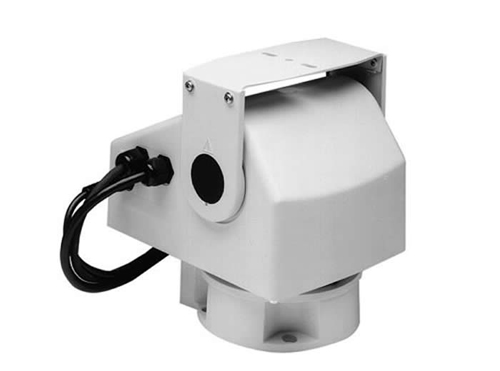
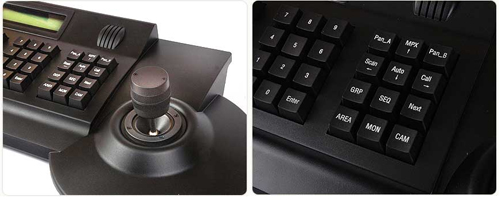

Głowica PTZ to specjalistyczne urządzenie, które w prosty sposób pozwala na zwiększenie pola widzenia kamery przemysłowej. Nowoczesne głowice PTZ wraz z klawiaturami sterującymi (manipulatory) oraz obiektywami kamer typu "moto-zoom" nie tylko zwiększają funkcjonalność kamer, ale także pozwalają na dokładne śledzenie obserwowanego obiektu lub zdarzenia. Sztywna konstrukcja kamer stacjonarnych sprawia, że ich pole widzenie ciągłe jest takie same, ponieważ układy optyczne tychże kamer są stale skierowane w jedno miejsce. Takie rozwiązanie bardzo słabo spisuje się w obserwacji miejsc o dużym natężeniu ruchu (utrudnione rozpoznawanie szczegółów). Wyposażenie standardowej kamery CCTV w głowicę PTZ oraz obiektyw typu "moto-zoom", nie tylko umożliwia swobodne sterowanie polem widzenia ale również zdecydowanie zwiększa skuteczność prowadzonego nadzoru wizyjnego na danym obszarze.

Przykładowa głowica PTZ firmy Bosch Security Systems
Podstawowe parametry głowic PTZ
Każda głowica obrotowa PTZ posiada określony udźwig, którego przekroczenie może spowodować złą pracę. Głowicę PTZ należy zawsze odpowiednio dobierać do masy kamery z którą będzie współpracować.
Jednym z ważniejszych parametrów technicznych określających głowice PTZ jest prędkość obrotu. W najprostszych głowicach obrotowych PTZ prędkość obrotu najczęściej wynosi około 10 stopni na sekundę. W modelach bardziej zaawansowanych możemy spotkać się z płynną regulacją prędkości obrotu w zakresie od 0,1 do nawet 400 stopni na sekundę. Prędkość obrotu to podstawowy i zarazem najważniejszy parametr techniczny głowic PTZ. Głowice obrotowe o dużej prędkości obrotu doskonale sprawdzają się w miejscach o dużym natężeniu ruchu (np. stadiony piłkarskie), gdzie szybkość reakcji układu obserwacyjnego decyduje o skuteczności prowadzonej obserwacji.
Kolejnym parametrem technicznym, na który należy zwrócić uwagę pisząc o głowicach PTZ jest powtarzalność pozycjonowania. Jest to parametr, który w tanich modelach głowic PTZ jest niezwykle trudny do uzyskania. W obrotnicach do kamer wyższej klasy parametr powtarzalności pozycjonowania najczęściej jest mniejszy niż 0,2 stopnia.
Głowice PTZ podobnie jak obudowy do kamer przemysłowych powinny posiadać informację na temat zgodności z normą IP. Dzięki tej informacji użytkownik wie w jakich warunkach środowiskowych urządzenie może pracować stabilnie i bezawaryjnie.
Klasyfikacje obudów do kamer przemysłowych ze względu na ochronę przed dotknięciem, przed dostaniem się ciał stałych oraz przed działaniem wody, wg PN-92/E-08106:
Podział głowic obrotowych PTZ
Ze względu na oś obrotu głowice PTZ do kamer przemysłowych możemy podzielić na dwie podstawowe grupy: pracujące w jednej płaszczyźnie i pracujące w dwóch płaszczyznach (pozioma i pionowa).
Głowice PTZ (jedna płaszczyzna) - urządzenia tego typu przeważnie pracują w płaszczyźnie poziomej. Każda głowica PTZ pracująca w poziomie posiada dodatkowo możliwość ustawienia wstępnego w płaszczyźnie pionowej. W prostych głowicach tego typu obrót w poziomie jest najczęściej ograniczony do 350 stopni. W zaawansowanych urządzeniach możemy uzyskać pełen zakres obrotu, czyli 360 stopni. Ze względu na możliwość obrotu w jednej płaszczyźnie głowice tego typu zwane są obrotowymi.
Głowice PTZ (dwie płaszczyzny)- umożliwiają pełen obrót w płaszczyźnie (360 stopni) i częściowy obrót w pionie, zazwyczaj ograniczony do 90 stopni. Ze względu na możliwość obracania zarówno w pionie (ang. "tilt"), jak i poziome (ang. "pan"), obrotnice do kamer tego typu zwane są obrotowo-uchylnymi.
Zintegrowane kamery PTZ
Zintegrowane kamery PTZ to kompletny zestaw obrotowy składający się z kamery, obrotnicy PTZ i szeregu elementów dodatkowych. Obecnie zintegrowane kamery PTZ są coraz częściej stosowane w systemach monitoringu wizyjnego. Decydując się na zastosowanie w systemie monitoringu zintegrowanej kamery PTZ należy korzystać jedynie z urządzeń specjalistycznych renomowanych firm. Co prawda parametry techniczne kamer CCTV mogą być porównywalne to mechanizmy obrotowe mogą się znacznie różnić zarówno pod względem funkcjonalności, niezawodności jak i jakości wykonania. Warto inwestować w wysokiej jakości zintegrowane kamery PTZ, ponieważ w przypadku niedrogich rozwiązań wady mechanizmów obrotowych bardzo często wychodzą po pewnym czasie użytkowania.
Sposoby sterowania kamerami PTZ
Sterowanie głowicami PTZ oraz zaawansowanymi układami optycznymi typu "moto-zoom" wymaga stosowania specjalistycznych sterowników oraz tzw. odbiorników telemetrycznych. Sterowniki to urządzenia korzystające z mikrokontrolerów, które w zależności od swojej konstrukcji umożliwiają obsługę od jednej do nawet kilkuset kamer PTZ. Urządzenia dedykowane do obsługi jednej kamery najczęściej bazują na prostych układach przekaźnikowych.
Proste i tanie pulpity sterujące- sterowanie głowicą PTZ odbywa się za pomocą klawiszy, z reguły przeznaczone do pracy w małych instalacjach monitoringu wizyjnego. W systemach o dużym natężeniu ruchu stosowanie prostych pulpitów sterujących jest niepraktyczne i niewygodne (konieczność częstego poruszania kamerą).
Pulpity sterujące z manipulatorem- zapewniają łatwe, komfortowe i efektywne sterowanie kamerami zintegrowanymi PTZ.
Rozbudowane pulpity sterująceurządzenia wyposażone w dodatkowe elementy np. wyświetlacz LCD. Oprócz możliwości sterowania zintegrowanymi kamerami PTZ pozwalają również na sterowanie innymi urządzeniami, w tym: krosownicami, rejestratorami, itp.

Przykładowa klawiatura sterująca